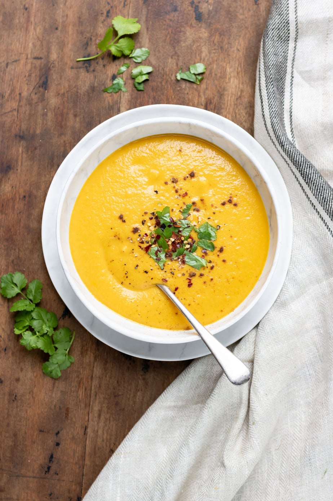

Odin Recipes
- Home
- Chicken recipe
- Cookie recipe
- Soup recipe
Asparagus Soup

Description
This velvety lentil soup is bursting with nourishing ingredients.
Ingredients
- 1 tablespoon oil
- 1 onion chopped
- 3 cups 750ml vegetable stock
- 3 cups 450g frozen peas
Steps
- Heat the oil in a large saucepan, then add the onion and cook on a low heat for 5 minutes
- Stir in the stock, cover and cook for a further 5 minutes
- Stir in the peas, bring it back to a simmer
- Puree the soup in a blender/liquidiser